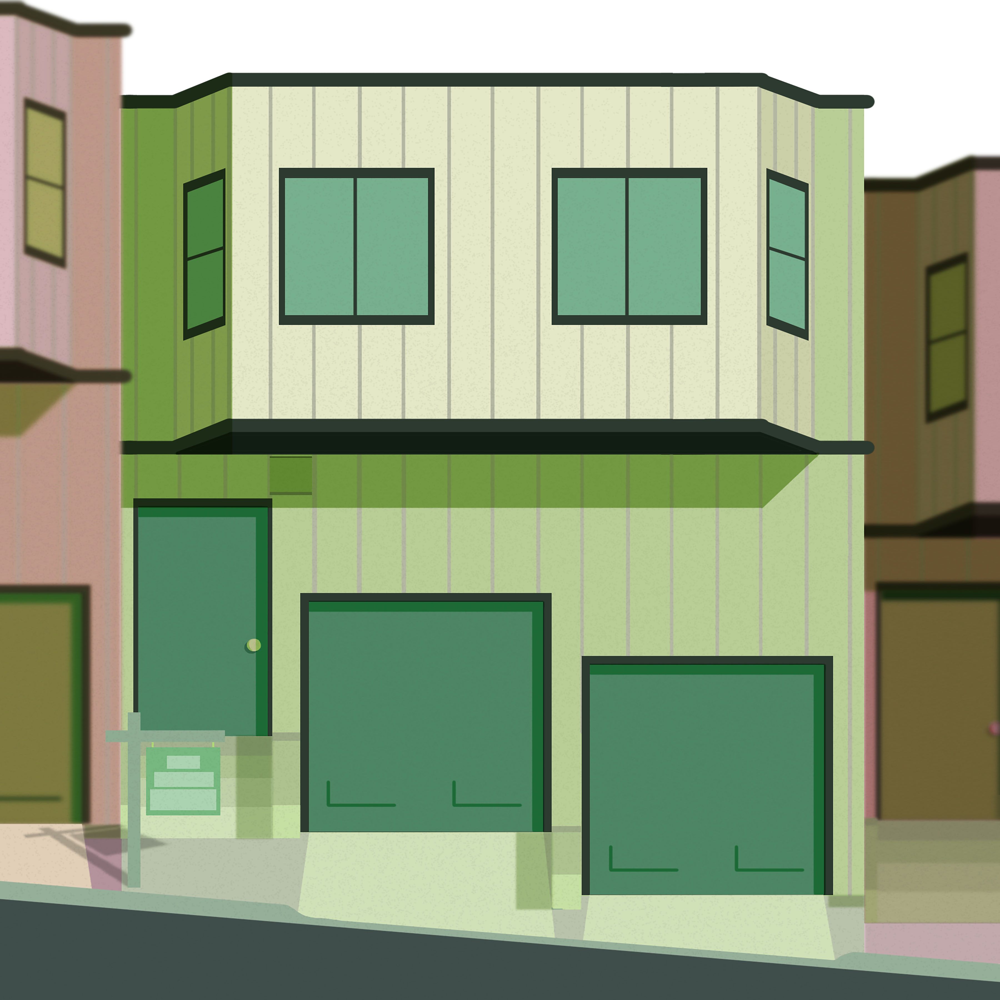

Vanna Dao Portfolio
{kind=link}
"Detective Saihara", Digital Art, Clip Studio Paint & Photoshop, 2018
I drew this character from one of my favorite games, New Danganronpa V3. I drew him in a Sherlock Holmes outfit because his role in the game is the detective.


"Bizarre Color Food Series", Digital Art, Clip Studio Paint & Photoshop, 2018
This is my first time drawing food portraits and I wanted to add a unique colors into the foods that we don't usually see."Go with The Flow", Digital Video, 6 min., 2018

"Nostalgic", Net Art, 2018
This net art represents my first experience with the computer in abstract style. I included objects where the audience must click in order to go to the next page."S@!L0R |\/|00|\|", Net Art, 2018
This website is about one of my favorite childhood shows, Sailor Moon. This is based on the English dub version where many scenes were censored to be more appropriate for the US audience. I made the theme glitchy to represent the censorship in this show.
{kind=link}
"$1,200,000", Digital Art, Clip Studio Paint, 2019
With the house crises going on in the bay area, I created an image of a house that is located in San Francisco that cost $1,200,000.


"Love Room", Maya, 2019
I wanted to express how love can be hypnotizing and how it can be a puzzle and a challenge.
"Colorful", Processing, 2019
I used processing to create consecutive squares and triangles. I also have grid of lines making rainbow color effects. There is also a sin wave however it is difficult to see due to it blending in with the rainbow grid. The code can be found here.
"Gatcha Ruined My Life", p5.js, 2019
Fate Grand Order is a mobile game I play almost everyday. These characters are from the game. This game is similar to a lottery where you have to save or spend money to get the character you want and it is not 100% guaranteed that the player will get the character they want. The code can be found here. Run sketch here.

"Petal Clock", p5.js, 2019
This petal clock consist the 24 hour clock, 12 hour clock, 60 minutes clock,
and 60 seconds clock. After every 60 seconds past, the color of the 60 seconds will change.
The code can be found here. Run sketch here.

"Winter 2019 Anime Series", p5.js, 2019
This is a series of animes that aired in Winter 2019. I used an API to create the ratings of each animes.
The code can be found here. Run sketch here.

"Interact with Kirby", p5.js, 2019
I created a mini game where the player will interact with Kirby by clicking on the icons to fill the affection bar
located on the top right corner.
The code can be found here. Run sketch here.

"Voice Recognition", Net Art, 2019
The website is based on Voice Recognition. I created this because this system has helped me in many situations such as voice command GPS while driving and translation with my relatives.

"Floral Resin Series", UV Resin and Flower, 2020
This is a sculpture work I created using UV Resin and Flower. This represents keeping a memory or object permanent in our life since everything in this world is temporary.
"Psycle", RPG Maker and Photoshop, Collaborated with Monica Munoz, 2020
Psycle is a 2D pixel art game that centers on the idea of life during the Covid-19 pandemic. The player, who is a student, lives through a loop of daily life activities such as sleep, shower, and homework. When stay at home orders were placed this year, many students were faced with the dilemma of adjusting to only online classes with no real certainty of how it would develop. Students best interests were and are currently pitted against available resources. Our game, Psycle, metaphorically exhibits the continuous struggle that most students are adhering through this ‘cycle’ of uncertainty, fear, and anxiety.Home